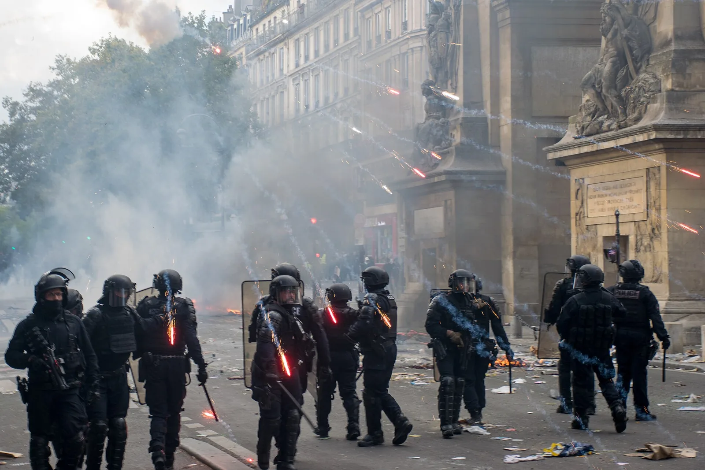

Video & Originalstimmen
Meinungs- und Versammlungsfreiheit
Das Bundesverfassungsgericht erklärt Meinungsfreiheit und ein pauschales Versammlungsverbot während der Corona-Pandemie.
Grundrechtevideo beim Bundesverfassungsgericht öffnen ↗04 · Entscheidungen
Friedliche Demonstrationen stehen unter dem Schutz der Versammlungsfreiheit. Bei Gewalt kann die Polizei eingreifen und Straftaten verfolgen.
Menschen dürfen sich versammeln, um gemeinsam eine Meinung öffentlich auszudrücken. Das ist besonders wichtig, wenn sie sich im normalen politischen Betrieb wenig gehört fühlen. Artikel 8 des Grundgesetzes schützt friedliche Versammlungen ohne Waffen. Eine unbequeme oder scharfe Kritik macht eine Versammlung noch nicht unfriedlich.
Menschen ohne deutschen Pass dürfen grundsätzlich ebenfalls demonstrieren. Der besondere Wortlaut von Artikel 8 bezieht sich auf Deutsche; andere rechtliche Grundlagen und die Versammlungsgesetze schützen ebenfalls Menschen ohne deutsche Staatsangehörigkeit. In NRW nennt das Versammlungsgesetz ausdrücklich jede Person.
Für Demonstrationen unter freiem Himmel gelten gesetzliche Regeln. Auch spontan entstandene Versammlungen können geschützt sein.
Grundgesetz · Artikel 8 · geltender Gesetzestext, geprüft 04.11.2026
Grundgesetz · Artikel 2 · geltender Gesetzestext, geprüft 04.11.2026
Versammlungsgesetz NRW · §§ 1, 13 und 14 · amtliche Fassung, geprüft 04.11.2026

Wer Scheiben einschlägt, Sachen stiehlt oder Menschen angreift, kann strafrechtlich verfolgt werden. Friedliche Demonstrierende bleiben geschützt.
Die Polizei muss konkrete Gefahren abwehren und Straftaten verfolgen. Maßnahmen sollen möglichst die Verantwortlichen treffen. Dazu kann es gehören, einzelne Personen aus einer Versammlung auszuschließen. Unter bestimmten Voraussetzungen kommen auch Maßnahmen gegen eine erkennbare Gruppe in Betracht.
Verhältnismäßigkeit bedeutet: Eine Maßnahme muss zum Schutz beitragen können. Gibt es ein gleich wirksames milderes Mittel, ist dieses zu wählen. Die Belastung muss außerdem zum geschützten Zweck passen. Eine Routenänderung kann zum Beispiel gegenüber einem Verbot das mildere Mittel sein. Bei einer unmittelbaren schweren Gefahr kann jedoch auch die Auflösung einer Versammlung nötig werden.
Nach einer wirksam bekanntgegebenen Auflösung müssen Teilnehmende den Versammlungsort verlassen.
Bundesverfassungsgericht · Polizeiliche Maßnahmen bei Versammlungen · PM 93/2016, 14.12.2016; Beschluss 02.11.2016
bpb · Versammlungsfreiheit · Rechtslexikon 2023, abgerufen 04.11.2026
Das Bundesverfassungsgericht beanstandete 2016 eine konkrete polizeiliche Einkesselung nicht. Entscheidend waren tatsächliche Anhaltspunkte für einen Verdacht gegen eine erkennbare Gruppe und die möglichst weitgehende Schonung anderer Versammlungsteilnehmender.
Die Frankfurter Ausschreitungen sind für die Planung weiterer Proteste relevant. Behörden müssen aber erklären, warum bei der konkret angekündigten Veranstaltung erneut Gewalt zu erwarten ist. Wichtig sind etwa belastbare Hinweise auf geplante Angriffe, die Organisation vor Ort und mögliche Schutzmaßnahmen.
Auch der Ort kann einen Unterschied machen: Eine andere Route kann gefährdete Geschäfte entlasten, während friedlicher Protest weiterhin sichtbar bleibt. Ob das ausreicht, hängt von den tatsächlichen Gefahren ab. Solche Entscheidungen können vor Gericht überprüft werden.
Verwaltungsgericht Frankfurt · Anforderungen an ein Versammlungsverbot · PM 09/2025, 06.10.2025
Versammlungsgesetz NRW · §§ 1, 13 und 14 · amtliche Fassung, geprüft 04.11.2026
Fiktives Beispiel: In deiner Nähe schlagen einige Menschen die Schaufenster eines Geschäfts ein. Du findest die politischen Forderungen weiterhin wichtig. Wie würdest du reagieren?
Video & Originalstimmen
Das Bundesverfassungsgericht erklärt Meinungsfreiheit und ein pauschales Versammlungsverbot während der Corona-Pandemie.
Grundrechtevideo beim Bundesverfassungsgericht öffnen ↗Hessens Innenminister Roman Poseck brachte nach den Ausschreitungen ein Verbot weiterer Gen-Z-Proteste ins Spiel. Stuttgarts Oberbürgermeister Frank Nopper forderte, bei fehlender ernsthafter Kooperation Beschränkungen bis hin zu einem Verbot zu prüfen.
SWR-Rechtsredaktion · Wann dürfen Demos verboten werden? · 02.11.2026, 20:01
Redaktioneller Stand: 4. November 2026.
Du hast dich genug informiert und bist fertig? Nimm dir kurz Zeit für das Exit-Ticket. Auch deine persönliche Meinung ist gefragt.
Zum Exit-Ticket ↗